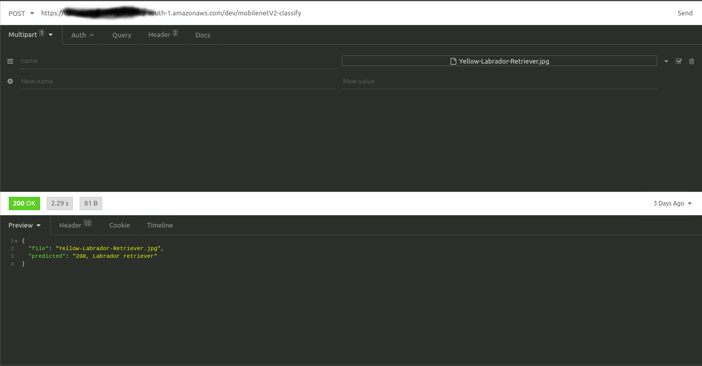

Deploying pretrained MobileNet V2 model over AWS using serverless open source framework
By VijayPrakash

Deploying pretrained mobilnet V2 model on Imagenet, using serverless open source framework to build and run application on AWS Lambda and fetch model from s3 bucket.
Serverless framwork manages all the resources in AWS and user need to just focus on the Application and problem solving.All the AWS resocures such as API end point, Lambda functions, Cloud Formations, application packages on S3 and many mores resources are created automatically.
"Due to cold start of Lambda, if it's taking more than a minute for first run, give a second try after 90 seconds by changing image"
MobileNet V2 (ImageNet 1000 Classes)
Context:
It's a Series of learning on Training models for less configurable devices like Mobiles, Embedded Systems (Jetson Nano, Rasberry pi, Neural computing stick) with less number of parameters without compromising the Accuracy.Here, in the first article mainly focusing on setting up environment and deploying into AWS.
Pre-Requisite:
- OS: Ubuntu 18.04/20.04
- Miniconda environment with necessary python package
- Install Docker and Node.js
- Install open source packages, npm and serverless.
- setup AWS account for 1 year free subscription by providing credit card details.
Content:
- Get a pre-trained model, mobilenet v2 trained on Imagenet and deploy it into AWS S3(Simple Storage Service) bucket.
2.png)
### Importing the Libraries
import torch
from torchvision import models
### Instancing a pre-trained model will download it's weights to a cache memory
model = models.mobilenet_v2(pretrained = True)
### Deactivating some layers in the model, so that model output it's inferences as expected.
model.eval()
### Trace the model with some dummy input
traced_model = torch.jit.trace(model,torch.randn(1,3,224,224))
### Saving the model
traced_model.save('mobilenet_v2.pt')
- Create a serverless Lambda(service) function. It generates boilerplate for template: aws-python3

### Setting up serverless(sls) with the AWS user credentials
sudo sls config credentials --provider aws --key <AWS-key> --secret <AWS-secret-key>
### Create a service (Lambda function) in current directory with service name as new folder.
#serverless create --template <name-of-the-template> --path <name-of-the-service>
serverless create --template aws-python3 --path mobilenet-v2
After creating a Lambda function, it will generate a folder which is having two files i.e., handler.py and config.yml files with service name as folder name.
- Installing a serverless plugin which will automatically bundle dependencies from a requirement.txt file.
sudo serverless plugin install -n serverless-python-requirements
Change the permission of lambda function folder, run below command inside the folder (mobilenet-v2).if used sudo while creating it.
sudo chown -R $USER:$USER .
Deployment Package on AWS Lambda cannot be greater than 250MB (Pytorch itself can be 470MB or more!). so manually create requirements.txt file and add a link to python wheel file (.whl) for Pytorch and Lambda will directly install it for us. The requirements.txt should look like below:
- To enable deploying package through npm command, add a deploy script to package.json file
{
"name": "mobilenet-v2",
"description": "",
"version": "0.1.0",
"dependencies": {},
"scipts":{"deploy":"serverless deploy"},
"devDependencies": {
"serverless-python-requirements": "^5.1.0"
}
}
- Update handler function in handler.py
"""Code to download pre-trained pytorch model.
Download the pre-trained model and convert into trace model
"""
try:
import unzip_requirements
except ImportError:
pass
from requests_toolbelt.multipart import decoder
import torch
import torchvision
import torchvision.transforms as transforms
from PIL import Image
from torchvision.models import resnet50
from torch import nn
import boto3
import os
import tarfile
import io
import base64
import json
print("Import End")
# define environmental variables if there are not existing
S3_BUCKET = os.environ['S3_BUCKET'] if 'S3_BUCKET' in os.environ else 'name-of-the-bucket'
MODEL_PATH = os.environ['MODEL_PATH'] if 'MODEL_PATH' in os.environ else 'mobilenet_v2.pt'
json_data = os.environ['json_data'] if 'json_data' in os.environ else 'imagenet1000_clsidx_to_labels.json'
print("Downloading the model:")
s3 = boto3.resource('s3')
try:
if os.path.isfile(MODEL_PATH) != True:
#get object from s3
obj = s3.Bucket(S3_BUCKET).Object(MODEL_PATH)
# read it in memory
print("creating Bytestream")
bytestream = io.BytesIO(obj.get()['Body'].read())
print("Loading Model")
model = torch.jit.load(bytestream)
print("Model loaded")
except Exception as e:
print(repr(e))
raise(e)
def transform_image(image_bytes):
"""Transform the image for pre-trained model.
Transform the image which includes resizing, centercrop and normalize.
Args:
image_bytes: Input image in bytes
Returns:
Tensor
Raises:
Except: An error occurred accessing the bytes.
"""
try:
transformations = transforms.Compose([
transforms.Resize(255), # Resnet needed 224 image
transforms.CenterCrop(224),
transforms.ToTensor(),
transforms.Normalize(mean=[0.485, 0.456, 0.406], std=[0.229, 0.224, 0.225])])
image = Image.open(io.BytesIO(image_bytes))
return transformations(image).unsqueeze(0) #converted image into batch size of 1
except Exception as e:
print(repr(e))
raise(e)
def imagenet1000_classidx_to_label(class_idx):
"""Convert class index to class labels, Imagenet.
Converting predicted class index to class labels, Imagenet.
Args:
class_idx: str, predicted class index.
Returns:
A dict mapping keys to the corresponding table row data
fetched. Each row is represented as a tuple of strings.
Returned keys are always bytes. If a key from the keys argument is
missing from the dictionary, then that row was not found in the
table (and require_all_keys must have been False).
Raises:
Exception: An error occurred accessing the json file.
"""
try:
#content_object = s3.Object(S3_BUCKET,json_data)
print('Entered into Class prediction level')
content_object = s3.Bucket(S3_BUCKET).Object(json_data)
file_content = content_object.get()['Body'].read().decode('utf-8')
json_content = json.loads(file_content)
return json_content[class_idx]
except Exception as e:
print("Error",repr(e))
return "Class Not Found"
def get_prediction(image_bytes):
"""Prediction from pre-trained model.
Inferecing using pre-trained model
Args:
image_bytes: Transformed image_bytes
Returns:
int, predicted class index from imagenet
"""
tensor = transform_image(image_bytes=image_bytes)
return model(tensor).argmax().item()
def classify_image(event, context):
"""Classify image using api.
Function is called from this template python: handler.py
Args:
event: Dictionary containing API inputs
context: Dictionary
Returns:
dictionary: API response
Raises:
Exception: Returning API repsonse 500
"""
try:
print("Entering into event")
content_type_header = event['headers']['content-type']
#print(event['body']) #printing the actual image in hex format
body = base64.b64decode(event["body"]) #decoding the base64 image
print("Body loaded")
picture = decoder.MultipartDecoder(body, content_type_header).parts[0]
prediction = get_prediction(image_bytes=picture.content)
print(prediction)
prediction_label = imagenet1000_classidx_to_label(str(prediction))
filename = picture.headers[b'Content-Disposition'].decode().split(';')[1].split('=')[1]
if len(filename) < 4:
filename = picture.headers[b'Content-Disposition'].decode().split(';')[2].split('=')[1]
return { #returning the result for the event
"statusCode": 200,
"headers": {
'Content-Type': 'application/json',
'Access-Control-Allow-Origin': '*',
"Access-Control-Allow-Credentials": True
},
"body": json.dumps({'file': filename.replace('"', ''),'predicted': f"{prediction}, {prediction_label}"})
}
except Exception as e:
print(repr(e))
return {
"statusCode": 500,
"headers": {
'Content-Type': 'application/json',
'Access-Control-Allow-Origin': '*',
"Access-Control-Allow-Credentials": True
},
"body": json.dumps({"error": repr(e)})
}
The above codeblock define as the entry handler function for Lambda. It contains application specific code. Following functions are implemented in this file:
1. S3 bucket and path for model file in S3.
2. Loading of the model and JSON from S3 bucket.
3. Entry handler functions which will be invoke every time AWS Lanbda function is triggered.
4. Processing of incoming image content and using model for image's classification.
- Update configurations in serverless.yml
service: mobilenet-v2
provider:
name: aws
runtime: python3.8
stage: dev
region: ap-south-1
timeout: 60
environment:
S3_BUCKET: s3-bucket-name
MODEL_PATH: mobilenet_v2.pt
iam:
role:
statements:
- Effect: "Allow"
Action:
- s3:getObject
Resource: arn:aws:s3:::s3-bucket-name/*
custom:
pythonRequirements:
dockerizePip: true
zip: true
slim: true
strip: false
noDeploy:
- docutils
- jmespath
- pip
- python-dateutil
- setuptools
- six
- tensorboard
useStaticCache: true
useDownloadCache: true
cacheLocation: "./cache"
package:
patterns:
- '!package.json'
- '!package-log.json'
- '!node_modules/**'
- '!cache/**'
- '!test/**'
- '!__pycache__/**'
- '!.pytest_cache/**'
- '!model/**'
functions:
classify_image:
handler: handler.classify_image
memorySize: 3008
timeout: 60
events:
- http:
path: mobilenetV2-classify
method: post
cors: true
plugins:
- serverless-python-requirements
- Deploy the package
serverless deploy
After running deployment command, it will check the size of zip files if the size is less than 250 mb then it will generated API end point and it creates all the necessary AWS resources for running the application. Restful API end point is created on AWS API gateway.
- API gateway configuration for Binary Media Type
We need to allow multipart/form-data content type for the HTTP request and hence visit AWS API gateway console and set "Binary Media Type" as "multipart/form-data"
- Testing Deploying using API tool
Install Insomnia API tool is used to test the deployment. Invoke API with following configurations:
HTTP Method: POST
URL: {generated API link after deployment}
Content-Type: multipart/form-data
Select image file for clasification: dog.jpg

If you have any doubts in the article, feel free to comment on your queries. I will be more than happy to help. I am also open to suggestions and feedbacks.Happy learning!!!